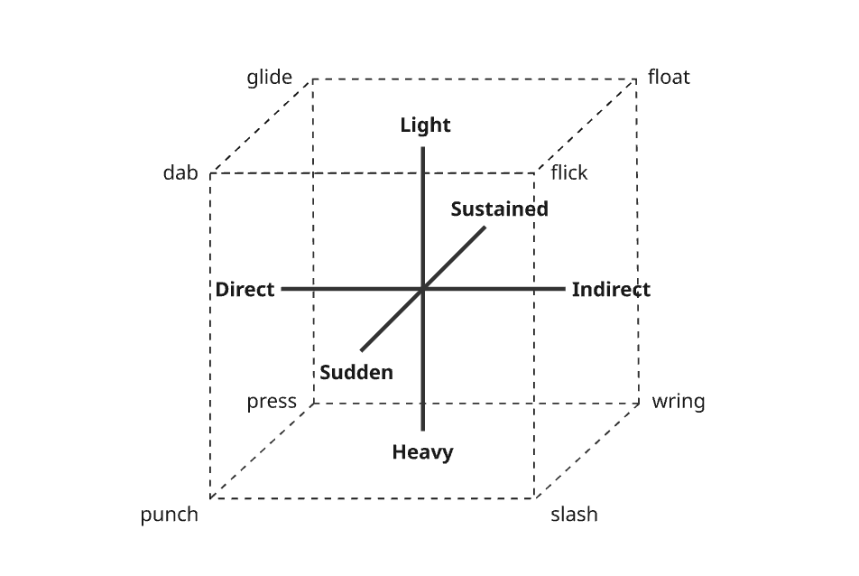

Dance can be viewed as harmony through proprioception. Just as harmonic waves can be composed and encoded in auditory form to produce music, so too can harmonic waves be composed and encoded through proprioception to produce dance. Dance in this sense, is the movement of energy through the body that makes intuitive sense, but is typically paired with music as a source of such energy.
Dance has a physical and spiritual component. The physical component is the rehearsal of the pathways energy takes as it moves through the body. The spiritual is the emotional quality that motivates and modifies the texture of this movement. If we return to our kinematic chain heuristic of the body, we can better visualise the specific pathways along which energy moves within the body: frontal, sagittal, transverse, or in combination, frontal-sagittal, frontal-transverse and sagittal-transverse. This means that energy moving in a joint in its least complex form takes oscillates back and forth, side to side, rotationally in and out, in a circle, in a front-facing figure eight, or in a side-facing figure eight. These movements occur freely, or if grounded, push the grounded section of the kinematic chain in the opposite direction to that movement.
Movement can occur across joints simultaneously, in smooth sequence, or in broken sequence. This maps to the concepts of groove, flow and isolation. In groove, all points we can voluntarily move move together at the same time. Groove corresponds to rhythm in music, and stems from the pulse of the heart. In flow, adjacent points move in smooth sequence with some delay. Flow corresponds to melody in music, and stems from breath. In Isolation, points move in broken sequence, for instance, the movement of a sequence of joints occurs, one triggering the other, though the pathway at each joint differs. Take rotation of the wrist triggering a forward pull of the chest, versus a fluid arm-wave along the frontal plane at each joint. Groove, flow and isolation complement and combine just as rhythm, melody, and phrasing do in music to create the concepts of groove-flow, isolation-flow and isolation-groove.
This is a decent overview of the physical aspect of dance. The spiritual aspect comes into play when dance is imbued with emotion. The emotion changes the quality of the movement. Joy, excitement, sadness, fear, hope, anger, all change the qualities of the energy that passes through the body. The movement may become sudden or sustained, light or heavy, direct or indirect, fast or slow, small or large. Laban Movement Analysis plots the vertices of a cube along the former three of these pairs as axes to describe eight textures of dance. These textures are to punch, slash, press, wring, dab, flick, glide, and float.
